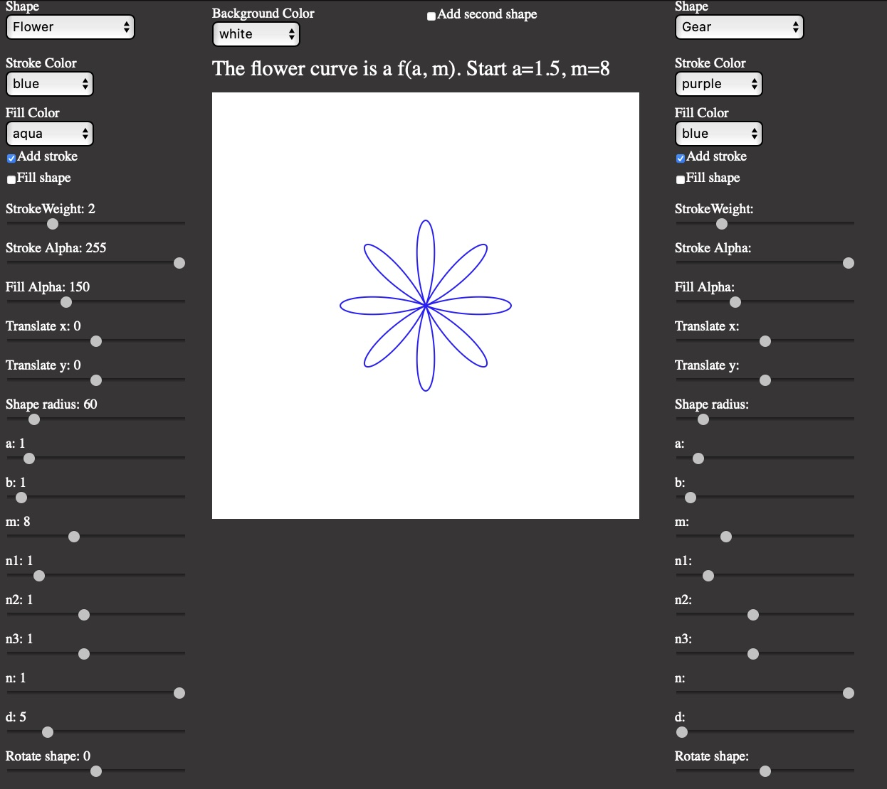
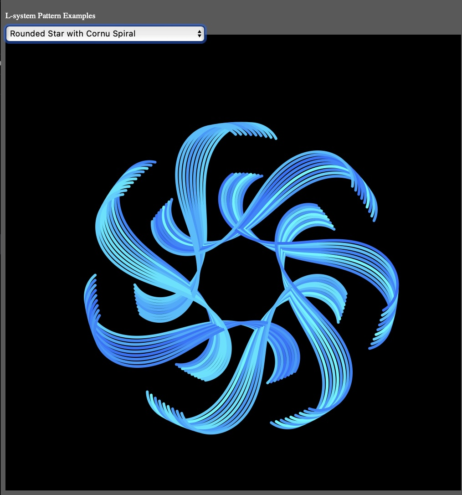
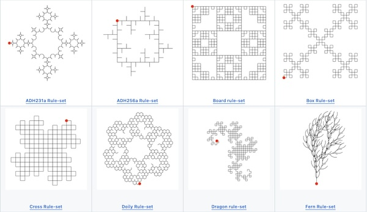
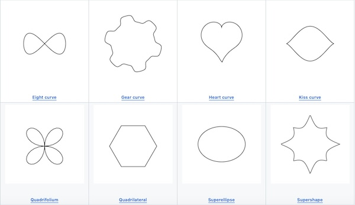

L-system Digital Pattern Creator
Experiment with the Code
Design Your Own Pattern
Learn how the polar curve changes when the parameters are adjusted

Experiment with polar shapes
See What Is Possible

See Examples
Learn More about Rule-sets

Instuctions
Learn More about Polar Curves

Learn More About Polar Shapes
Instructions